ПРО КИНО
Cinemaholiс

Cinemaholiс
"Кино - это зеркало, в котором мы часто видим себя."© А.Г. Иньярриту
STRANGER THINGS / ОЧЕНЬ СТРАННЫЕ ДЕЛА, с 2016 г.
1980-е годы, тихий провинциальный американский городок. Благоприятное течение местной жизни нарушает загадочное исчезновение подростка по имени Уилл. Выяснить обстоятельства дела полны решимости родные мальчика и местный шериф, также события затрагивают лучшего друга Уилла – Майка. Он начинает собственное расследование. Майк уверен, что близок к разгадке, и теперь ему предстоит оказаться в эпицентре ожесточенной битвы потусторонних сил.
Кинопоиск 8,4
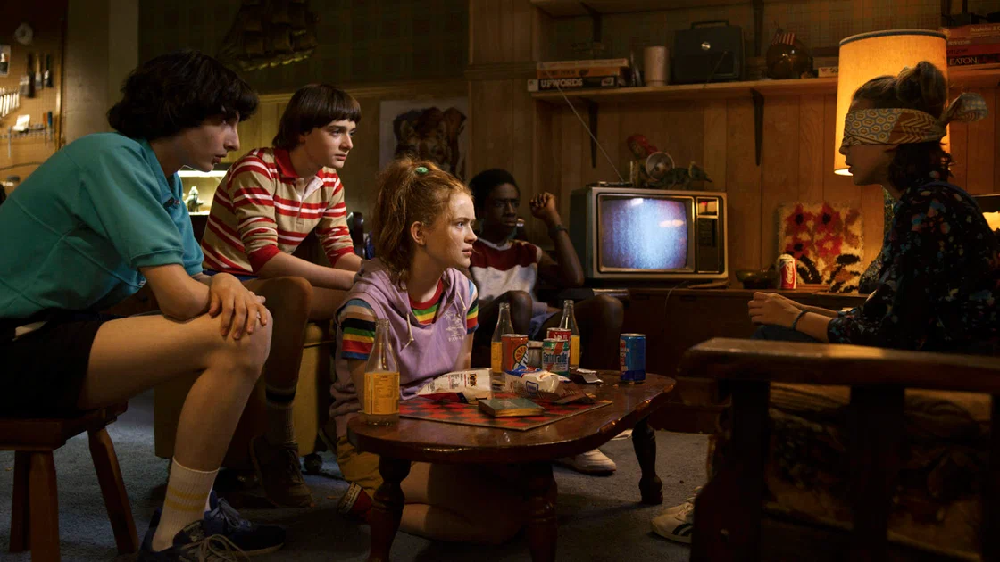
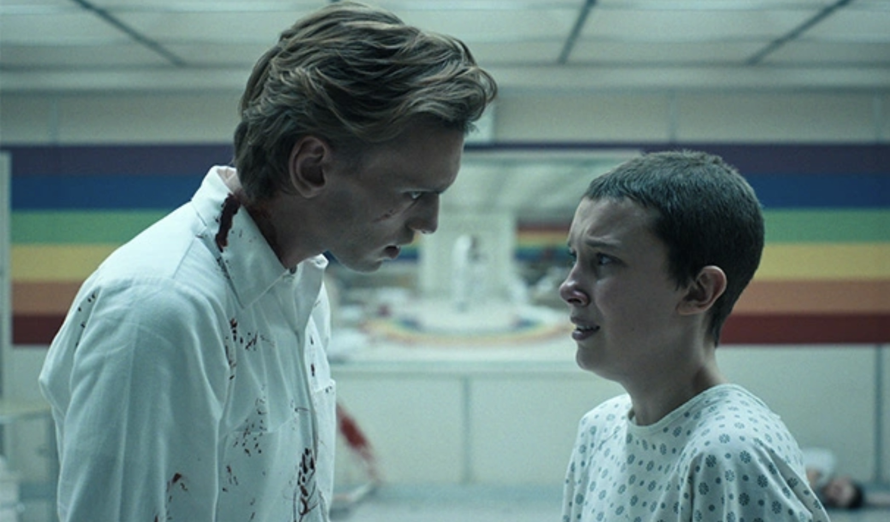
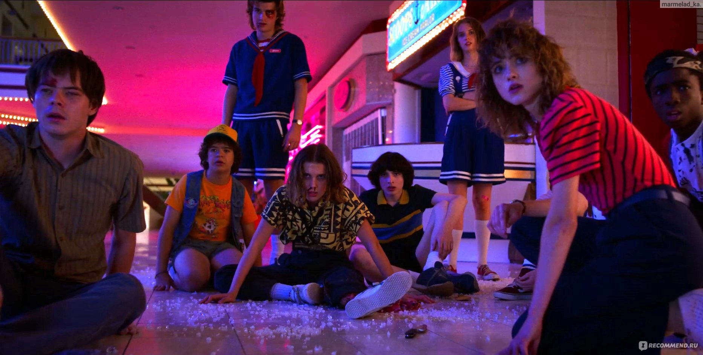
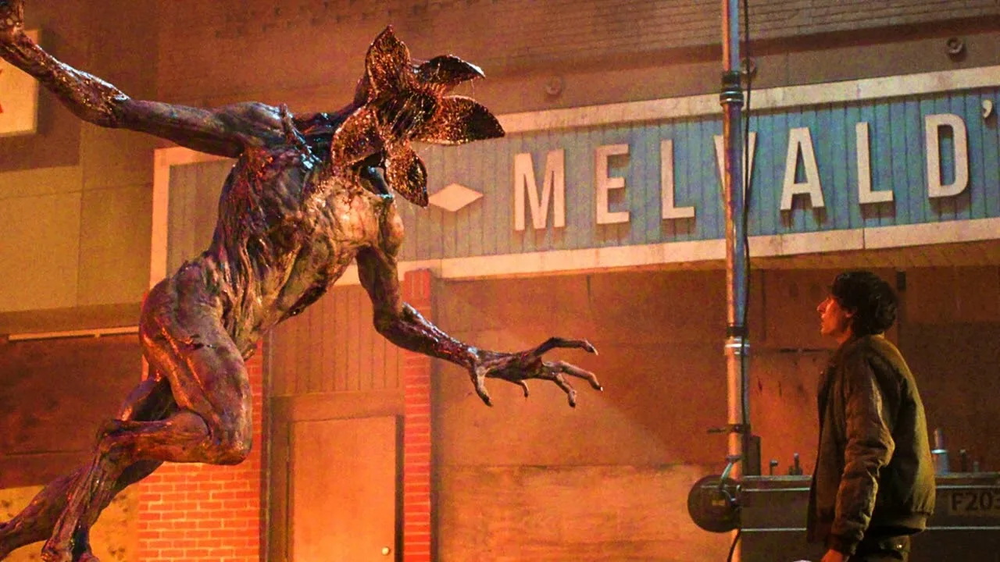
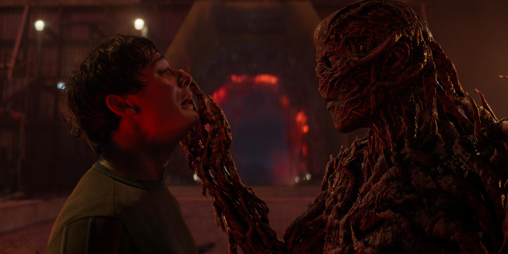
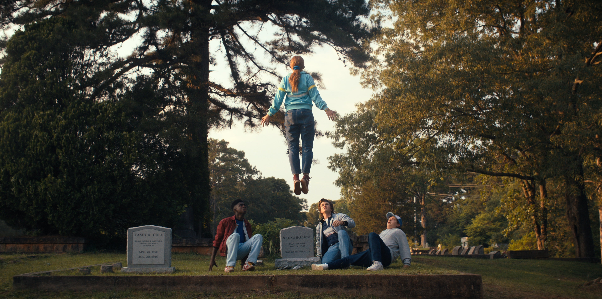
САУНДТРЕК:
Barton - Running up that hill
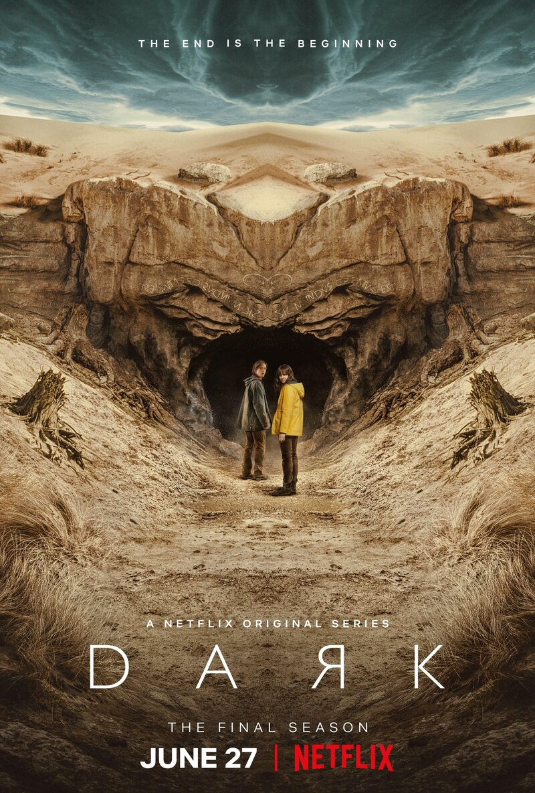
THE DARK / ТЬМА, c 2017-2020 г.
История четырёх семей, живущих спокойной и размеренной жизнью в маленьком немецком городке. Видимая идиллия рушится, когда бесследно исчезают двое детей в местной пещере. Пещере, которая позволяет путешествовать во времени на 30 лет в будущее и прошлое. Бесконечная временная петля, породившая множество тайн и запутанных сюжетных линий. А что если твой отец это твой сын?
Кинопоиск 8,2
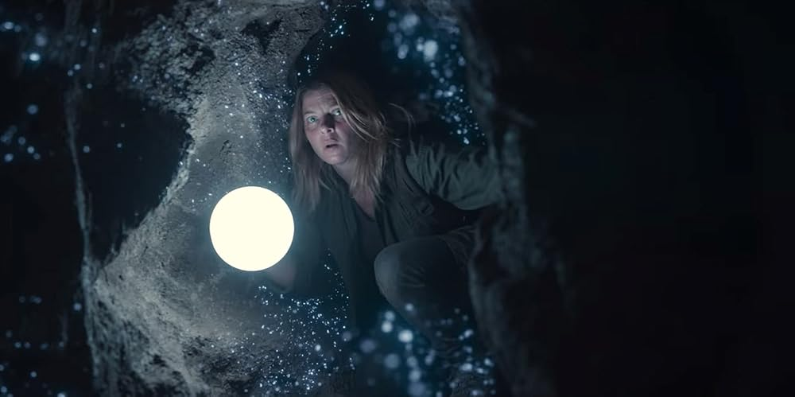
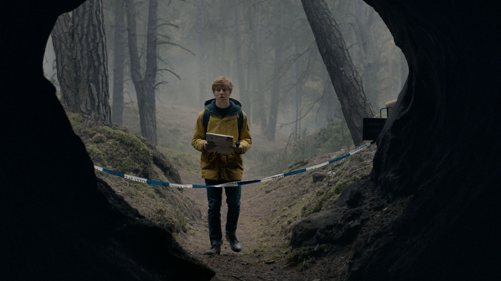
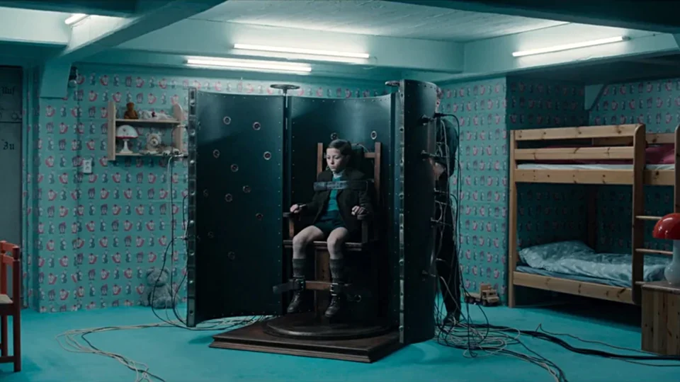
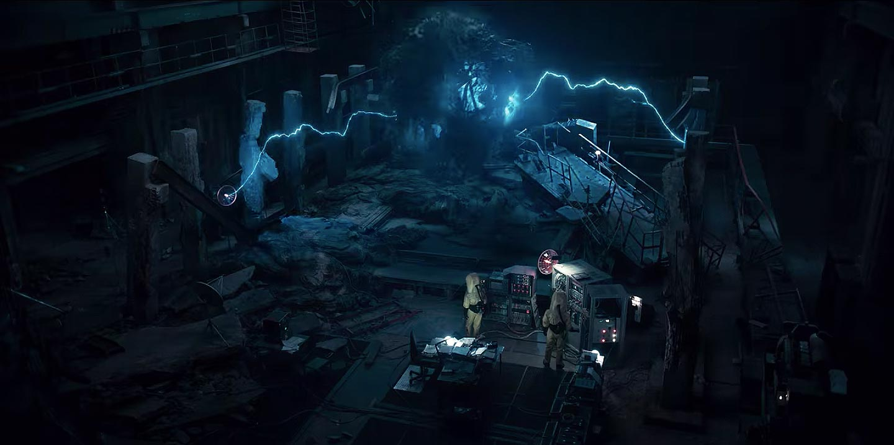
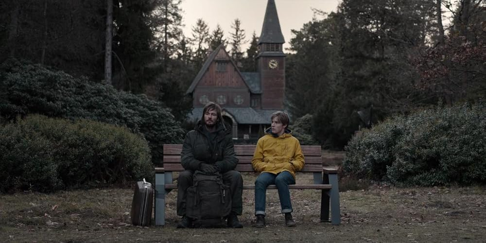
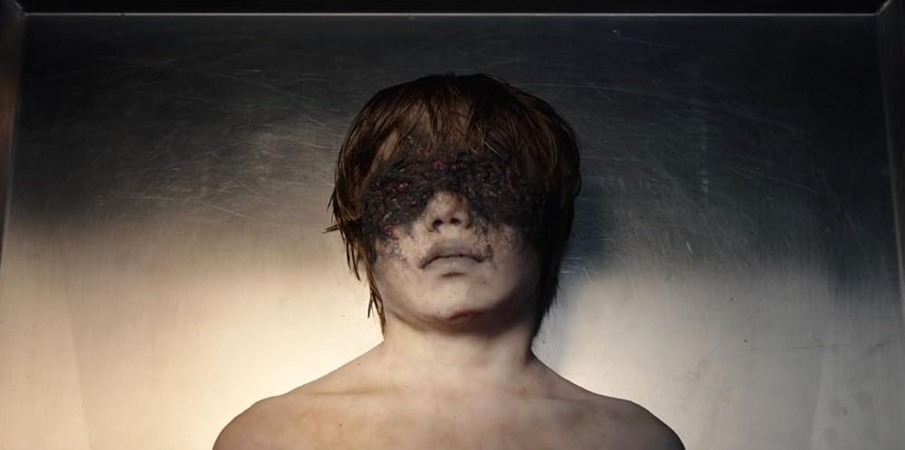
САУНДТРЕК:
Kim Carnes - I Pretend
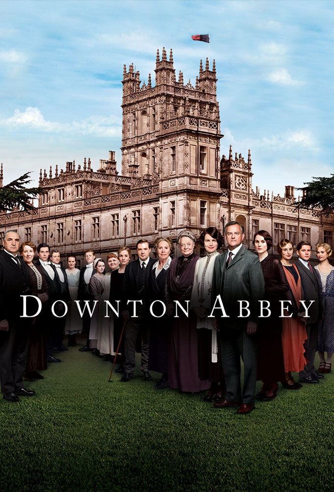
DOWNTON ABBEY / АББАТСТВО ДАУНТОН, с 2010–2015г.
1912 год. Англия. Наследник титула графа Грэнтэма, живущего с семьей в своем родовом имении Даунтон, погибает на «Титанике». Семья ожидает, что теперь, когда наследников мужского пола не осталось, владения и капитал семьи после смерти графа перейдут к его старшей дочери. Но граф, отдавший всю свою жизнь своему поместью, отказывается отстаивать права юной Мэри, считая, что все, включая немалый капитал его жены, должно отойти к наследнику его графского титула, безвестному дальнему родственнику..
Кинопоиск 8,5
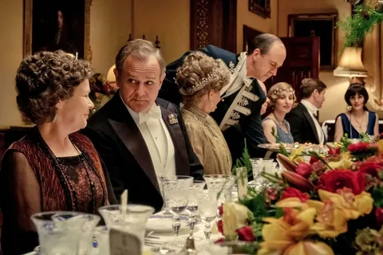
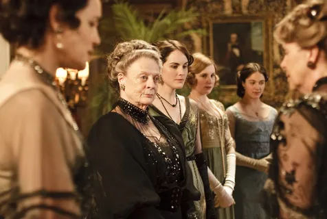
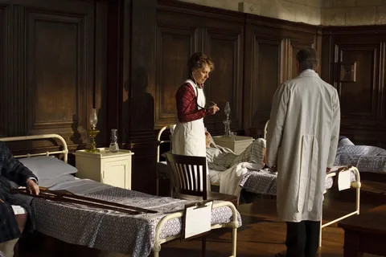
САУНДТРЕК:
The Chamber Orchestra - The Suite
Конечно это Голливуд - сердце кинематографа!
Голливуд — район в составе города Лос-Анджелес (штат Калифорния, США), который традиционно ассоциируется с американской киноиндустрией. Здесь расположены многие киностудии, живут известные актёры, а также находятся знаковые достопримечательности, связанные с кино.
Название происходит от слов holly («падуб») и wood («лес»). По одной из версий, его выбрала жена основателя поселения Харви Уилкокса — Дейда Уилкокс. Она услышала это название от попутчицы в поезде, которая описывала своё поместье
Среди достопримечательностей Голливуда — знаменитая Аллея славы с звёздами с именами выдающихся деятелей индустрии развлечений, Китайский театр TCL, театр «Долби» (где ежегодно проходит церемония вручения премии «Оскар») и другие